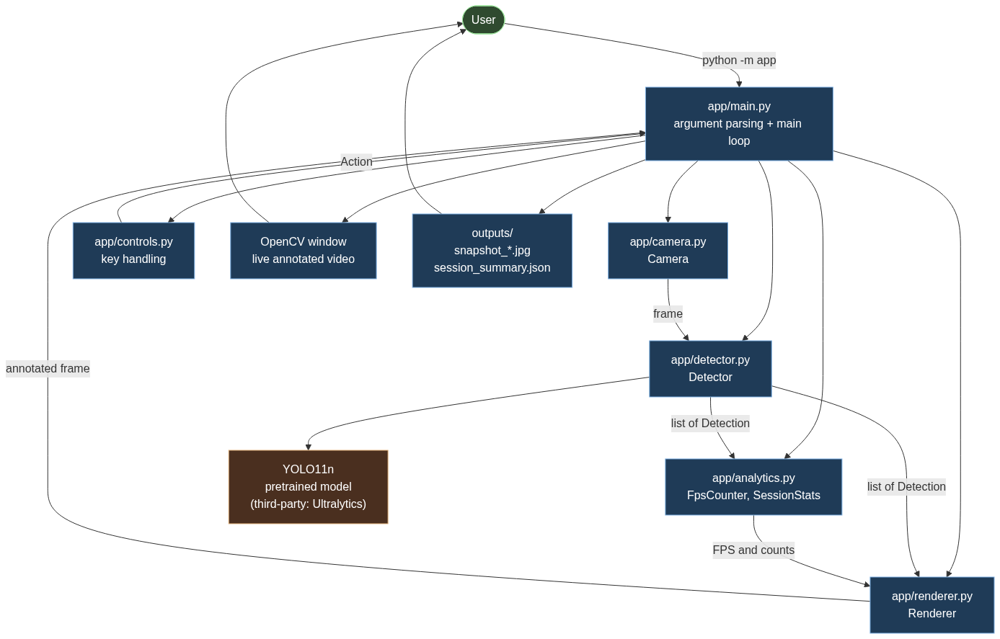
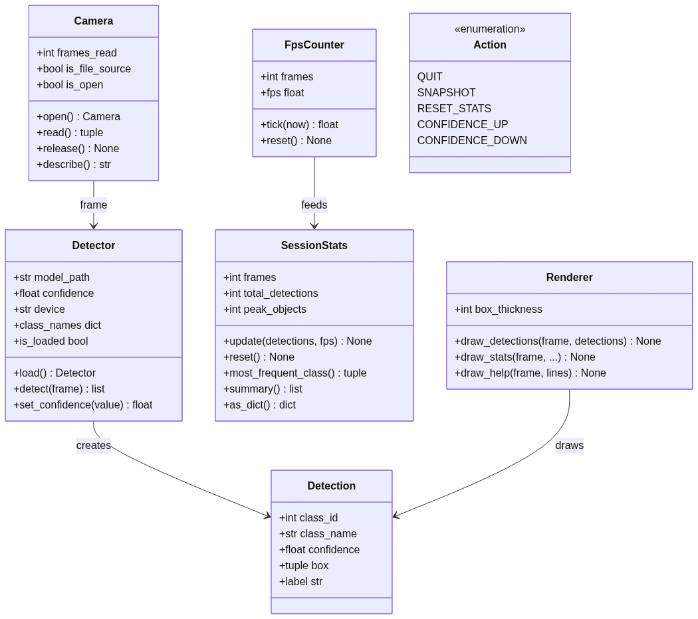
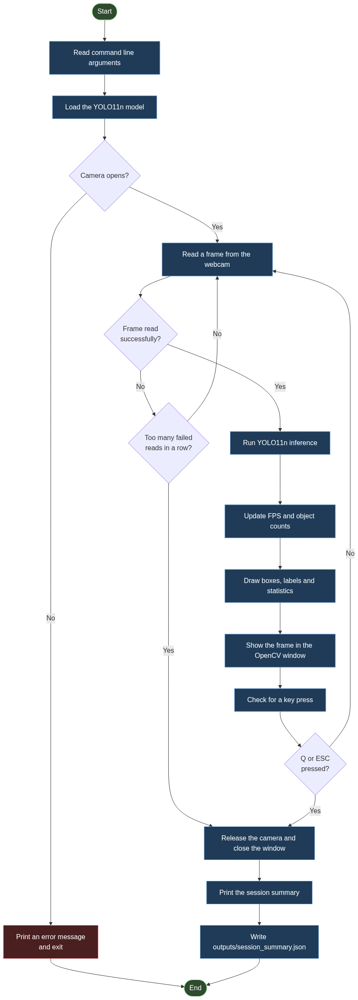
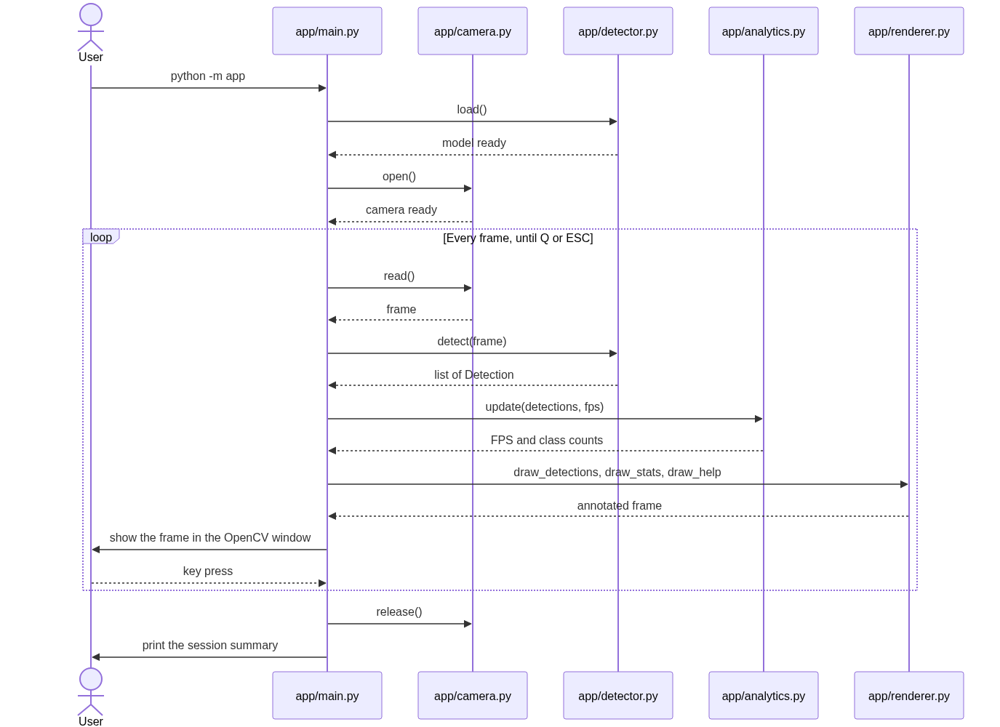
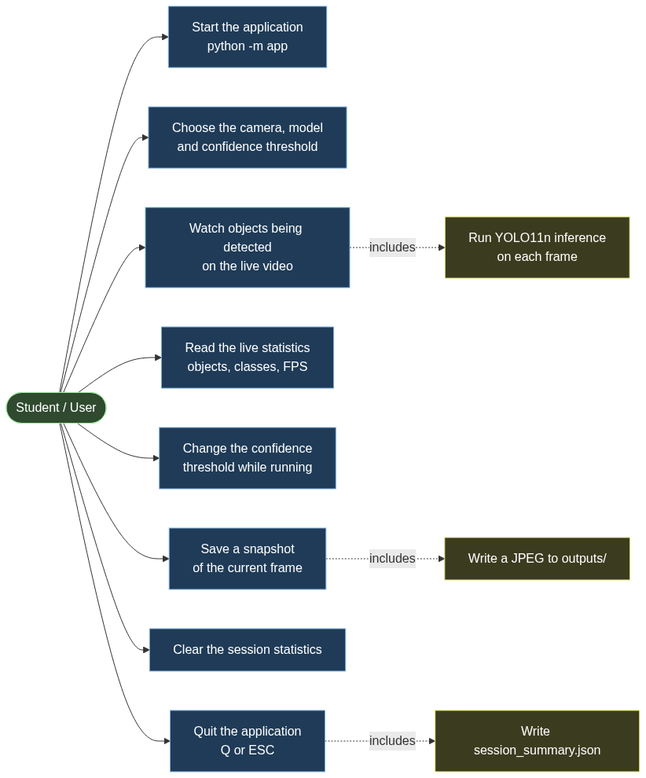

2. Introduction
Computer Vision is a broad field, and this report only touches the parts of it that the project uses. This section introduces those parts, states the problem the project addresses, and explains why a webcam is a suitable device for it.
2.1 Computer Vision
Computer Vision is the field of computer science concerned with enabling computers to extract useful information from images and video. Where a human recognises a chair in a photograph without conscious effort, a computer receives only a grid of numbers describing pixel intensities. Computer Vision develops the methods that turn those numbers into meaningful descriptions of a scene.
Typical Computer Vision tasks include image classification (what is in this image?), object detection (what is in this image, and where?), segmentation (which pixels belong to which object?) and tracking (how do objects move between frames?). This project is concerned with object detection.
2.2 Object Detection
Object detection answers two questions at once: which objects are present in an image, and where they are located. The answer is normally expressed as a set of bounding boxes, each carrying a class label and a confidence score. The confidence score is a number between 0 and 1 that expresses how strongly the model associates that region of the image with that class.
Object detection is considerably harder than classification, because the model must locate objects as well as name them, and because a single image may contain several objects of different classes at different scales.
2.3 Real-Time Detection
A real-time detection system applies an object detection model to a continuous stream of frames as they arrive, rather than to a single stored image. The practical consequence is a time budget: if the camera delivers 30 frames per second, the system has roughly 33 milliseconds per frame in which to capture, analyse, annotate and display the result. If processing takes longer than that budget, the displayed video becomes visibly delayed or jerky.
Real-time detection therefore involves a trade-off between accuracy and speed that a single-image system does not face. This trade-off is the reason that the choice of model variant matters, and it is discussed in Section 10.
2.4 Why Webcam-Based Detection is Useful
A webcam is an inexpensive, universally available image sensor. Applying object detection to a webcam feed produces an immediately useful and immediately understandable result: a live view of the world with the recognised objects labelled.
Because the feedback is visual and instantaneous, a webcam application is also an effective way to observe how a detection model behaves in practice — which classes it recognises reliably, which it confuses, and how its behaviour changes with lighting, motion and distance.
2.5 The Role of Deep Learning Models such as YOLO
Modern object detection is dominated by deep convolutional neural networks. Among these, the YOLO ("You Only Look Once") family, introduced by Redmon et al. (2016), takes a single-stage approach: one forward pass through the network produces all detections at once, rather than proposing candidate regions and classifying them in a separate step. This single-stage design is what makes YOLO models fast enough for real-time use.
YOLO11 is a recent member of that family, released by Ultralytics in September 2024. The Ultralytics library provides pretrained YOLO11 weights and a compact Python API for running inference, which allows a student project to concentrate on the application rather than on implementing a network from scratch.
3. Problem Statement
A camera on its own only records what it sees. It cannot report what is in the picture. Doing that manually does not scale: watching a live video feed and writing down every object that appears is slow and impossible to keep up with.
A system is therefore required that can capture live webcam frames, detect common objects in real time using a pretrained object detection model, display the detections, and provide simple live statistics.
The system must run from a single command on an ordinary laptop, must make the detection results readable at a glance, and must allow the user to influence its behaviour while it is running.
4. Objectives
The objectives of the project are:
- To capture live video from a webcam using OpenCV.
- To perform object detection on incoming frames using a pretrained YOLO11n model.
- To display bounding boxes, class names and confidence scores on the live video.
- To calculate basic real-time statistics: frame rate, object count and per-class
- counts.
- To allow simple runtime controls, so that the user can save a snapshot, clear the
- statistics and adjust the confidence threshold without restarting the program.
- To save annotated snapshots of the current frame.
- To maintain a modular and testable implementation, in which each concern is
- isolated in its own module and covered by unit tests.
5. Scope
The scope of the project is defined as much by what it leaves out as by what it includes. Both are stated explicitly below, so that the boundary of the work is unambiguous.
5.1 Included in the Scope
- Capture from a single webcam.
- Object detection with the pretrained YOLO11n model.
- Detection restricted to the 80 object classes of the COCO dataset.
- Real-time detection on each incoming frame.
- Visualisation of bounding boxes, class names and confidence scores.
- Basic live analytics: frame rate, object count and per-class counts.
- Keyboard controls for quitting, snapshots, clearing statistics and adjusting the
- confidence threshold.
- Saving annotated snapshots to disk.
- A session summary written to a JSON file on exit.
5.2 Excluded from the Scope
The following are deliberately not part of the project:
- Custom training or fine-tuning of a detection model.
- Object tracking between frames.
- Multi-camera processing.
- Image upload.
- Batch processing of stored images or video files.
- Cloud deployment.
- A web dashboard or any graphical user interface beyond the OpenCV window.
- Distance estimation.
- Voice control.
The exclusions matter as much as the inclusions: they keep the project to a size and complexity appropriate to a single-semester undergraduate piece of work, and they allow the included functionality to be implemented and tested properly.
6. Functional Requirements
Each requirement is stated in terms of its input, its processing and its output.
FR1 — Webcam Capture
| Aspect | Description |
|---|---|
| Input | A camera device index supplied on the command line (default 0), and optionally a requested width and height. |
| Processing | The camera is opened through cv2.VideoCapture. On macOS the AVFoundation backend is requested, on Windows DirectShow, and on Linux the default backend. If the requested backend is rejected by the driver, OpenCV is allowed to choose. |
| Output | A sequence of BGR frames, or a CameraError carrying an explanation of the likely causes if the device cannot be opened. |
FR2 — Object Detection
| Aspect | Description |
|---|---|
| Input | A single BGR frame. |
| Processing | The frame is passed to the pretrained YOLO11n model through the Ultralytics API, with the current confidence threshold and the inference resolution (640 pixels). |
| Output | A list of Detection objects, each holding a class index, a class name, a confidence score and a bounding box, ordered most-confident first. |
FR3 — Detection Visualisation
| Aspect | Description |
|---|---|
| Input | The frame and the list of detections for that frame. |
| Processing | Each box is drawn with a colour derived from a checksum of its class name, so a class always receives the same colour. A filled label rectangle is drawn above the box, containing the class name and the confidence to two decimal places. Boxes are clamped to the frame boundary. |
| Output | The same frame, modified in place, ready for display. |
FR4 — Real-Time Analytics
| Aspect | Description |
|---|---|
| Input | The list of detections for the frame and the current timestamp. |
| Processing | The frame rate is computed as the reciprocal of the mean interval between recent frames. Object counts, per-class counts, peak object count, average confidence and running totals are accumulated for the session. |
| Output | The current FPS, the per-class counts for the frame, and the accumulated session statistics. |
FR5 — User Controls
| Aspect | Description |
|---|---|
| Input | The integer returned by cv2.waitKey(1). |
| Processing | The key code is translated into a named action. Both lower-case and upper-case letters are accepted, so the Shift key need not be held. |
| Output | An action value that the main loop acts upon, or Action.NONE. |
FR6 — Snapshot Saving
| Aspect | Description |
|---|---|
| Input | The current annotated frame, triggered by the S key. |
| Processing | The frame is written to outputs/snapshot_<timestamp>.jpg using cv2.imwrite. The output directory is created if it does not exist. |
| Output | The path of the written file, printed to the terminal and shown briefly on the video. If writing fails, a message is printed and the loop continues. |
FR7 — Session Summary
| Aspect | Description |
|---|---|
| Input | The accumulated session statistics. |
| Processing | The statistics are formatted for the terminal and serialised to JSON. |
| Output | A printed summary, and outputs/session_summary.json containing the session start time, duration, frames processed, total detections, peak objects in a frame, average detections per frame, average confidence, average and peak FPS, the most frequent class, and the per-class totals. |
7. Non-Functional Requirements
Functional requirements describe what the system does; non-functional requirements describe how well it has to do it. The six requirements below cover performance, usability, reliability, maintainability, portability and modularity.
NFR1 — Performance
The system must process and display webcam frames fast enough for the result to be perceived as live. This is a design aim rather than a guaranteed figure: the achieved frame rate depends on the hardware, the camera resolution and the model size, and no minimum frame rate is promised. The measured frame rate is reported to the user at runtime rather than assumed.
NFR2 — Usability
The program must start with a single command and no configuration. The keyboard controls must be displayed on screen, so that the user does not need to consult documentation while the program is running. Status messages must confirm that a control has taken effect.
NFR3 — Reliability
The program must fail with an explanation rather than an unhandled traceback. Invalid command-line values, a missing model file, a missing Ultralytics installation and an unopenable camera each produce a specific message.
A frame that cannot be read is skipped; the loop stops only after 30 consecutive failed reads, so that a momentary glitch does not terminate the session. Failure to write a snapshot is reported but does not stop the loop. The camera is always released and the window always destroyed on exit, including on interruption.
NFR4 — Maintainability
Each concern must be isolated in its own module with a single responsibility, and the modules that contain no OpenCV or model dependencies must be testable in isolation. Functions and classes carry docstrings describing their contract, including the errors they raise.
NFR5 — Portability
The application must run on macOS, Windows and Linux. Platform differences are confined to a single place: the choice of OpenCV capture backend. The inference device is selected automatically, preferring CUDA, then Apple Silicon MPS, and falling back to CPU.
NFR6 — Modularity
The main loop must orchestrate the other modules without those modules calling each other, so that any one of them can be replaced or tested independently. The dependencies of each module must be explicit in its imports.
8. Technology Stack
| Technology | Version used | Purpose in this project |
|---|---|---|
| Python | 3.10 or newer | The language in which the application is written. |
OpenCV (opencv-python) | 4.9.0 or newer | Webcam capture, drawing bounding boxes and text, and the display window. |
| Ultralytics | 8.3.0 or newer | Provides the pretrained YOLO11 model weights and the inference API. |
| YOLO11n | yolo11n.pt | The pretrained object detection model. Downloaded automatically on first use. |
| PyTorch | Installed with Ultralytics | Performs the underlying tensor computation for inference. |
| NumPy | 1.24 or newer | Frame buffers and array operations. |
| pytest | 7.4 or newer | Runs the unit test suite. |
| Git and GitHub | — | Version control and publication of the repository. |
The application has no other runtime dependencies. It requires Python and a webcam, and nothing else.
9. Dataset and Model Information
This section is included because the project applies a machine learning model, and because it is important to be precise about what was and was not produced by the student.
9.1 The Model
The application uses the pretrained YOLO11n detection weights distributed by Ultralytics as yolo11n.pt. These weights are loaded through the Ultralytics Python API and are downloaded automatically the first time the program runs.
9.2 The Dataset Behind the Model
The YOLO11n detection weights are pretrained on the COCO (Common Objects in Context) dataset. COCO is a large-scale object detection, segmentation and captioning dataset. Its detection portion defines 80 object classes, including person, car, bicycle, dog, cat, bottle, chair, laptop and cell phone. Because the model was trained on these 80 classes, those are the only classes it can report.
9.3 What Was Not Done
- No custom dataset was created. No images were collected, labelled or annotated
- for training or evaluation.
- No fine-tuning was performed. The pretrained weights were used exactly as
- distributed. The Ultralytics training API is never called anywhere in the
- application.
- The webcam session is not a dataset. The live session discussed in Section 19 is
- an observation of the system running. It has no ground-truth labels, and it
- therefore cannot support any accuracy measurement.
The reference for YOLO11 and its COCO-pretrained detection models is the official Ultralytics documentation listed in Section 26.
10. Model Selection Rationale
YOLO11 is distributed in several sizes — nano, small, medium, large and extra-large. The application uses the nano variant, yolo11n.pt. The reasons for that choice are practical rather than claims about quality:
- Lightweight variant. It is the smallest of the YOLO11 detection models in terms
- of parameter count, which keeps memory use and per-frame computation low.
- Suitable for real-time experimentation. A smaller model leaves more of the
- frame budget available for capture, drawing and display, which matters when the
- whole pipeline must fit inside a per-frame time budget.
- Pretrained weights available. Ultralytics publishes ready-to-use weights for
- this variant, so no training step is required before the application can run.
- Straightforward Python integration. The Ultralytics API loads a checkpoint and
- runs inference in a few lines, which keeps the application code focused on the
- application.
- Suitable for webcam inference. It runs on an ordinary laptop CPU as well as on
- a GPU, so the project is not tied to specialised hardware.
- Lower computational requirement than larger variants. The larger YOLO11
- variants offer different points on the accuracy-versus-cost curve; for this
- project, the lower-cost option was preferred so that the application remains
- responsive on the hardware available.
This is a trade-off, not a claim of superiority. No comparative experiment between YOLO11 variants was carried out, so no statement is made here about which variant is more accurate. The larger variants would likely improve detection quality at the cost of frame rate; that comparison is left as future work.
11. System Architecture
The application is a loop. Each pass reads a frame, detects the objects in it, updates the statistics, draws the results, displays the frame and checks for a key press. The work is divided into small modules, each with one clear responsibility, and the main loop is the only module that coordinates them.
The data flow through one iteration is:
Webcam
|
v
Camera Module (app/camera.py) -> frame
|
v
Detector Module (app/detector.py) -> list of Detection
|
v
Analytics Module (app/analytics.py) -> FPS, class counts, session totals
|
v
Renderer (app/renderer.py) -> annotated frame
|
v
OpenCV Display (app/main.py) -> window on screen
|
v
Controls (app/controls.py) -> Action
|
v
Next Frame / Exitapp/main.py owns this sequence. The other modules are called by it and do not call each other, with the single exception that renderer reads the Detection objects that detector produces. That constraint is what allows analytics, controls and detector to be tested without a camera, a window or a model.
Figure 1 shows the same structure with the data that passes between the modules.

The Detector module is the only part of the system that communicates with the pretrained model, which is a third-party component shown separately in the diagram. The Files element represents the snapshot and session-summary output described in FR6 and FR7.
12. Project Module Description
| Module | Responsibility |
|---|---|
app/__main__.py | Entry point that makes python -m app work. |
app/main.py | Command-line parsing, output files and the main loop. |
app/camera.py | Webcam capture. |
app/detector.py | YOLO11 loading and inference. |
app/analytics.py | Frame-rate measurement and object counting. |
app/renderer.py | All OpenCV drawing. |
app/controls.py | Keyboard controls. |
12.1 app/main.py
Parses the command-line arguments, constructs the other objects, and runs the main loop. It is the only module that knows the order in which the other modules are used. It also writes the session summary when the loop ends. Five options are supported: --camera, --model, --conf, --width and --height. The loop body is written as five commented steps so that the sequence is readable at a glance.
12.2 app/camera.py
Wraps cv2.VideoCapture. It opens the device, reads frames, and releases the device again. It also accepts a video file as a source, which is not a project feature but a convenience that allows the pipeline to be exercised on a machine with no webcam. If the source cannot be opened, it raises CameraError with a message listing the likely causes, instead of allowing OpenCV's own error to surface. The platform-specific capture backend is chosen here and nowhere else.
12.3 app/detector.py
Loads the pretrained YOLO11n model and runs inference on individual frames. It converts the raw output of the model into a list of Detection objects, each holding a class index, a class name, a confidence and a bounding box. The rest of the program never touches the Ultralytics API directly, so the model could be replaced without changing the loop. This module also resolves the inference device and reports a readable name for it. It implements no part of the neural network.
12.4 app/analytics.py
Measures the frame rate from real timestamps and counts objects. FpsCounter averages the intervals between recent frames and returns the reciprocal; the first call only records a starting time, so the frame rate is reported as zero until one interval has been measured.
SessionStats accumulates totals across the whole run and produces both the printed summary and the JSON written to disk. This module has no dependency on OpenCV, Ultralytics or NumPy, so all of its logic can be tested on its own.
12.5 app/renderer.py
Contains every OpenCV drawing call: the bounding boxes, the labels, the statistics panel and the controls panel. Class colours are derived from a checksum of the class name rather than from Python's built-in hash(), because string hashing is randomised per process and the colour would otherwise change on every run. Ten colours are defined in a fixed palette.
12.6 app/controls.py
Maps the integer returned by cv2.waitKey to a named Action, and clamps the confidence threshold to the permitted range. It contains no OpenCV code, so the key handling can be tested without opening a window.
12.7 app/__main__.py
A three-line module that allows the package to be executed with python -m app.
Figure 5 shows the principal classes and their relationships.

13. Workflow and Methodology
The application follows a fixed frame-by-frame sequence.
- Initialise the application. The command-line arguments are parsed and
- validated. An invalid value stops the program with an explanatory message.
- Load YOLO11n. The model weights are loaded, and downloaded once if they are not
- already cached. The inference device is selected automatically.
- Open the webcam. The capture device is opened and the requested resolution is
- applied. A failure here prints the likely causes and exits.
- Capture a frame. A frame is read from the camera.
- Run inference. The frame is passed to the model at the current confidence
- threshold and inference resolution.
- Filter detections using the confidence threshold. The threshold is passed to
- the model, so Ultralytics discards low-confidence detections during inference
- rather than the application filtering them afterwards.
- Collect class, confidence and bounding-box information. The model output is
- converted into
Detectionobjects and sorted most-confident first. - Update the statistics. The frame rate is measured from the current timestamp,
- and the object count, per-class counts and session totals are updated.
- Draw the results. Bounding boxes, labels, the statistics panel and the controls
- panel are drawn onto the frame.
- Display the frame. The annotated frame is shown in the OpenCV window.
- Process keyboard input. The key code is translated into an action and acted
- upon.
- Repeat until exit. The loop continues until
QorESCis pressed, the video - source ends, the read failures exceed 30 in a row, or the program is interrupted.
- Generate the session summary. The camera is released, the window is destroyed,
- the summary is printed to the terminal, and the same summary is written to
-
outputs/session_summary.json.
Figure 2 presents this sequence as a flowchart, including the error paths.

Figure 4 shows the same sequence as an interaction between the user and the modules, which makes the ordering of the startup calls explicit: the model is loaded before the camera is opened.

14. Design Diagrams
Five diagrams document the design. All five are stored in the repository under docs/diagrams/ as Mermaid source, and are reproduced here as figures.
14.1 Architecture Diagram
Figure 1 (Section 11) shows the modules and the data that passes between them. It corresponds to docs/diagrams/architecture.mmd.
14.2 Workflow Diagram
Figure 2 (Section 13) shows the frame-by-frame sequence together with the two error paths: a camera that will not open, and a stream that is lost. It corresponds to docs/diagrams/workflow.mmd.
14.3 Use Case Diagram
Figure 3 shows what the user can do with the system. The eight use cases correspond directly to the features listed in Section 6 and to the controls documented in Section 16. It corresponds to docs/diagrams/use_case.mmd.

14.4 Sequence Diagram
Figure 4 (Section 13) shows the order of interactions within one session. It corresponds to docs/diagrams/sequence.mmd.
14.5 Component and Class Diagram
Figure 5 (Section 12) shows the principal classes — Camera, Detector, Detection, FpsCounter, SessionStats, Renderer and the Action enumeration — and the relationships between them. It corresponds to docs/diagrams/component.mmd.
15. Implementation
This section describes the implementation concepts. Full source code is not reproduced; the repository is the reference for the implementation itself.
15.1 Webcam Capture using OpenCV
Capture is handled by cv2.VideoCapture. The application requests a platform-appropriate backend — AVFoundation on macOS, DirectShow on Windows, and the default on Linux — and falls back to letting OpenCV choose if the driver rejects the explicit request. The requested width and height are applied only if both were supplied, because a request for one dimension alone is ambiguous.
15.2 YOLO11n Model Loading
The model is loaded once, before the camera is opened. This ordering is deliberate: a missing or unreadable model is a more likely mistake than a missing camera, and reporting it first avoids opening a camera needlessly. A bare checkpoint name such as yolo11n.pt is treated as an official Ultralytics checkpoint that the library downloads itself, whereas a name containing a directory component is treated as a local file that must already exist.
15.3 Inference
Each frame is passed to the model with the current confidence threshold and an inference resolution of 640 pixels. Inference is wrapped so that any failure is reported as a ModelError naming the cause, rather than surfacing as an internal traceback from a third-party library.
15.4 Detection Representation
The raw output of the model is converted into a small Detection structure holding a class index, a class name, a confidence and a bounding box in (x1, y1, x2, y2) pixel coordinates. It exposes a label property that formats the text drawn above the box, for example person 0.87. Confining the Ultralytics data structures to this one conversion step means the rest of the program deals only in plain Python values.
15.5 Confidence Threshold
The confidence threshold is a single number, defaulting to 0.25 and constrained to the range 0.05 to 0.95. It is passed to the model rather than applied afterwards, so filtering happens inside inference. Lowering the threshold detects more objects, including weak and false ones; raising it keeps only the strongest detections. The + and - keys adjust it in steps of 0.05 and the new value is shown on screen.
15.6 Bounding-Box Drawing
Each box is drawn as a rectangle, with a filled rectangle above it carrying the class name and confidence. Two details are handled explicitly.
First, box coordinates are clamped to the frame boundary, because the model can predict a box that extends slightly outside the image. Second, the label is drawn above the box, but if it would fall off the top of the frame it is drawn inside the top of the box instead. Colours come from a fixed ten-colour palette indexed by a checksum of the class name, so a given class is always drawn in the same colour across runs.
15.7 FPS Calculation
The frame rate is measured, not assumed. FpsCounter records the interval between successive frames, keeps a rolling window of the most recent 30 intervals, and reports the reciprocal of their mean. The first call can only record a starting time, so it returns zero. Because the figure comes from real timestamps, it reflects the actual behaviour of the machine and is reported to the user rather than promised in advance.
15.8 Class Counting
Per-frame class counts are produced with collections.Counter over the class names of the frame's detections. Session-level totals accumulate into a Counter that persists across frames, and the most frequent class is reported at the end. Ties are broken alphabetically, so the reported result is deterministic.
15.9 Keyboard Controls
cv2.waitKey(1) returns a key code, or -1 when no key was pressed. A dictionary maps key codes to actions, and both lower-case and upper-case letters are mapped so that Shift need not be held. Keys that are not mapped produce Action.NONE and are ignored. The confidence clamp lives here rather than in the loop, so that the boundary behaviour can be tested without a window.
15.10 Snapshot Saving
Pressing S writes the current annotated frame to a timestamped JPEG in outputs/. The annotated frame is written, not the raw one, so the snapshot records what the user actually saw. The output directory is created if necessary. A write failure is reported but does not stop the loop.
15.11 Session Summary
When the loop ends, the statistics are printed to the terminal and written to outputs/session_summary.json. Eleven values are recorded: the session start time, duration, frames processed, total detections, the largest number of objects seen in a single frame, average detections per frame, average confidence, average and peak frame rate, the most frequent class, and the per-class totals. Writing the summary is wrapped so that a failure to write does not prevent the program from exiting cleanly.
16. User Controls
| Key | Action |
|---|---|
Q or ESC | Quit the application. |
S | Save a snapshot of the current annotated frame to outputs/. |
C | Clear the session statistics, so that the running totals restart from zero. |
+ | Increase the confidence threshold by 0.05, up to a maximum of 0.95. |
- | Decrease the confidence threshold by 0.05, down to a minimum of 0.05. |
Both lower-case and upper-case letters are accepted for Q, S and C. The same list is drawn in the bottom-left corner of the video window, so the controls are always visible while the program runs. After a control is used, a short status message is displayed for about two and a half seconds to confirm that the action took effect.
17. Testing
Testing here means software testing: verifying that the application code behaves as specified. The three subsections below describe the approach taken, the areas covered by the suite, and — just as importantly — what the tests do not measure.
17.1 Approach
The implementation is covered by a suite of 62 unit tests across five files, one per module. The tests are designed to run offline: they neither download the model nor require a webcam, and the complete suite finishes in a few seconds on an ordinary machine. That constraint shaped the module boundaries — analytics and controls deliberately contain no OpenCV or model code, so their logic can be exercised directly.
17.2 Coverage by Area
| Test file | Tests | Areas covered |
|---|---|---|
tests/test_main.py | 12 | Argument parsing, default values, rejection of invalid values, snapshot writing, session-summary JSON. |
tests/test_camera.py | 10 | Default device index, video-file source, description text, reading before opening, missing file, error messages, safe release, context manager. |
tests/test_detector.py | 14 | Detection structure and label formatting, confidence filtering, detector state, missing local model, device resolution and naming. |
tests/test_analytics.py | 16 | Class counting, frame-rate calculation and reset, session accumulation, peak objects, most-frequent class and tie-breaking, averages, summary dictionary. |
tests/test_controls.py | 12 | Every key mapping, upper-case handling, unmapped keys, confidence adjustment and clamping, help-line formatting. |
The specific areas requested of the suite are all covered: argument parsing (FR1), camera error handling (FR1, NFR3), detection structure (FR2), confidence filtering (FR2), object and class counting (FR4), FPS calculation (FR4), session statistics (FR7) and keyboard controls (FR5).
17.3 What the Tests Do Not Measure
Software testing and model evaluation are different things, and this project keeps them separate. The unit tests verify that the application behaves as specified: that arguments are parsed correctly, that errors are reported, that counts are accumulated correctly and that keys map to the right actions.
They say nothing whatsoever about how accurately the model detects objects. No unit test in this project asserts anything about detection accuracy, and none could — accuracy is a property of the model measured against labelled data, not a property of the application code.
The model's behaviour is discussed separately in Section 18 and Section 19.
18. Evaluation Methodology
Because this project uses a pretrained model rather than one trained here, the evaluation methodology has to be stated carefully. This section explains what is not evaluated, why, and what was measured instead.
18.1 No Formal Accuracy Evaluation
This project does not perform a formal accuracy evaluation. No labelled test dataset was created for the model, and no ground-truth annotations exist for the frames the application processes. Consequently, the following are not reported anywhere in this report:
- Precision
- Recall
- F1 score
- Mean Average Precision (mAP)
- Any other quantitative accuracy or quality metric
Reporting those figures would require a labelled evaluation dataset and a defined evaluation protocol. Neither is part of this project, and inventing figures would be meaningless. The limitation is restated in Section 21.
18.2 What Was Evaluated Instead
Evaluation therefore focuses on functional correctness and on the behaviour of the live system:
- Automated functional evaluation. The 62 unit tests described in Section 17
- verify the specified behaviour of every module, and are run with
pytest. - Live system observation. The application was run against a physical webcam and
- observed directly. This verifies that the components work together end to end, and
- that the system behaves as intended under real input.
The live test verifies that:
- the model loads and reports its class count;
- the webcam opens and delivers frames;
- inference runs on the live feed and produces detections;
- bounding boxes, labels and confidence values are drawn correctly;
- the statistics panel updates while the program runs;
- the keyboard controls respond;
- a snapshot is written to disk;
- the session summary is generated on exit;
- the application exits normally.
These are functional observations, not accuracy measurements. Detecting a person in a webcam frame confirms that the pipeline works end to end; it does not quantify how often the model is right.
19. Actual Experimental and Demonstration Results
The figures below are the recorded output of one session of the application running against a physical webcam. They are reported because they demonstrate that the system works end to end under real input.
19.1 Conditions
| Parameter | Value |
|---|---|
| Model | yolo11n.pt (pretrained) |
| Object classes available | 80 (COCO) |
| Inference device | Apple Silicon GPU (MPS) |
| Confidence threshold | 0.25 |
| Camera | Device index 0, AVFoundation backend |
| Capture resolution | 1920 × 1080 |
| Host | One laptop |
19.2 Recorded Results
| Measurement | Value |
|---|---|
| Frames processed | 1063 |
| Total detections | 1573 |
| Most objects detected in one frame | 5 |
| Average detections per frame | 1.48 |
| Average confidence | 0.739 |
| Average FPS | 16.0 |
| Peak FPS | 19.8 |
| Duration | 1:14 |
| Most frequent class | person (1290) |
Snapshot saving worked, and the session summary JSON was generated successfully.
19.3 Per-Class Totals
The session recorded the following per-class totals. They are reported as observed counts for this session, not as a measure of model quality.
| Class | Count |
|---|---|
| person | 1290 |
| cell phone | 85 |
| toothbrush | 45 |
| microwave | 44 |
| tv | 37 |
| bowl | 22 |
| dog | 14 |
| refrigerator | 9 |
| oven | 8 |
| chair | 7 |
| wine glass | 6 |
| bottle | 3 |
| fork | 2 |
| potted plant | 1 |
19.4 How These Results Should Be Read
These are observations from one laptop and one webcam session. They are not a benchmark. The frame rate in particular depends on the hardware, the camera resolution and the model size, and will differ on other machines. The detection counts depend on what happened to be in front of the camera during those 74 seconds, and carry no information about how often the model is correct.
No comparison is made with any other model, because no controlled experiment was carried out. The per-class distribution reflects the content of one room during one session and should not be interpreted as a measure of the model's ability to detect those classes.
20. Screenshots and Evidence
The following figures are the evidence available for this report. Where a screenshot was not captured, the item is marked as a placeholder for the student to insert.
| Item | Status |
|---|---|
| Live webcam view with detected objects | Included — Figure 6 |
| Snapshot output file | Included — Figure 6 is the snapshot written by the S key |
| Session summary JSON | Included — shown as Listing 1, the actual file content |
| Repository structure | Included — Table 1 is generated from the repository |
| Git commit history | Included — Table 2 is generated from the repository |
| Terminal startup and model information | Placeholder — insert a screenshot of the terminal banner printed at startup |
| Controls status message | Placeholder — insert a screenshot showing the on-screen confirmation after pressing S |
20.1 Figure 6 — Live Detection
The screenshot below was saved by the application itself, using the S key, during the session reported in Section 19. It shows the live annotated frame: one detected person with a bounding box and a confidence of 0.94, the statistics panel in the top-left corner, and the controls panel in the bottom-left corner.

The statistics panel visible in the snapshot shows the state of the program at the moment the key was pressed: 1 object in the frame, the class person, a frame rate of 16.2 FPS, the active confidence threshold of 0.25, and running totals of 1023 frames and 1533 detections. Those running totals are consistent with the final totals reported in Section 19, which were recorded at the end of the same session.
20.2 Listing 1 — Session Summary File
The session summary is written to outputs/session_summary.json when the program exits. The content below is the file generated by the session reported in Section 19, reproduced in full.
{
"started_at": "2026-09-18T00:45:36",
"duration_seconds": 74.32,
"frames_processed": 1063,
"total_detections": 1573,
"most_objects_in_one_frame": 5,
"average_detections_per_frame": 1.48,
"average_confidence": 0.7388,
"average_fps": 15.98,
"peak_fps": 19.78,
"most_frequent_class": "person",
"class_totals": {
"bottle": 3,
"bowl": 22,
"cell phone": 85,
"chair": 7,
"dog": 14,
"fork": 2,
"microwave": 44,
"oven": 8,
"person": 1290,
"potted plant": 1,
"refrigerator": 9,
"toothbrush": 45,
"tv": 37,
"wine glass": 6
}
}20.3 Table 1 — Repository Structure
| Path | Role |
|---|---|
README.md | Project overview, installation, usage and references. |
statement.md | Problem statement, scope, target users and feature summary. |
requirements.txt | Runtime dependencies. |
pyproject.toml | Project metadata and pytest configuration. |
LICENSE | MIT licence, with a third-party licensing notice. |
.gitignore | Files excluded from version control. |
app/__init__.py | Package metadata. |
app/__main__.py | Entry point for python -m app. |
app/main.py | Command-line interface and main loop. |
app/camera.py | Webcam capture. |
app/detector.py | YOLO11 loading and inference. |
app/analytics.py | Frame-rate measurement and counting. |
app/renderer.py | OpenCV drawing. |
app/controls.py | Keyboard controls. |
tests/test_main.py | Tests for argument parsing and output files. |
tests/test_camera.py | Tests for camera behaviour and errors. |
tests/test_detector.py | Tests for detection data and filtering. |
tests/test_analytics.py | Tests for counting and frame rate. |
tests/test_controls.py | Tests for key mappings. |
docs/architecture.md | Architecture description. |
docs/workflow.md | Workflow description. |
docs/diagrams/*.mmd | The five Mermaid diagrams. |
outputs/.gitkeep | Keeps the output directory in the repository. |
20.4 Table 2 — Commit History
| Commit | Description |
|---|---|
| Initial commit | Real-time object detection and scene analytics with YOLO11. |
| Set copyright holder and repository URLs | Repository metadata. |
| Stop tracking internal assistant workspace data | Keep working notes out of the repository. |
| Record GitHub publication and fresh-clone verification | Verification of the published repository. |
| Fix test polluting the working directory | Test isolation correction. |
| Make the program name adaptive, and harden the Mermaid diagrams | Diagram and naming corrections. |
| Diagnose and report OS camera-permission denial explicitly | Improved camera error reporting. |
| Verify the live OpenCV window | Corrected an earlier incorrect assumption about the display. |
| Simplify the application architecture | Reduced the implementation to its present size. |
| Reduce the test suite to meaningful unit tests | Focused the tests on behaviour. |
| Simplify the documentation and the project statement | Documentation pass. |
| Correct the YOLO11 citation, sample session and diagram details | Final accuracy corrections. |
21. Limitations
The following limitations are inherent to the design and scope of the project.
- Dependence on pretrained COCO classes. The model can only report the 80 classes
- it was trained on. It cannot report an object class that is not in COCO.
- Objects outside COCO are not recognised. An object of a type absent from the 80
- classes will either be missed entirely or assigned the nearest class it does know.
- Small or occluded objects may be missed. Objects that are distant, very small in
- the frame, or partly hidden behind other objects are detected less reliably.
- Lighting and motion blur affect detection. Poor lighting, strong backlighting
- and fast motion all reduce the quality of the detections.
- Hardware affects the frame rate. The measured frame rate depends on the
- processor, the GPU, the camera resolution and the model size. No minimum frame rate
- is guaranteed.
- Only one camera is processed. The application opens a single capture device.
- No object tracking. Objects are detected independently in each frame. There is
- no identity that persists between frames, so the same object appearing in
- consecutive frames is counted again each time.
- No custom training. The model was not trained or fine-tuned on any data
- specific to this project.
- No formal accuracy evaluation dataset. No labelled test set exists, so no
- precision, recall, F1 or mAP figure can be reported.
Limitations 1 to 5 concern the model and the hardware; limitations 6 to 9 concern the scope of the project as defined in Section 5.
22. Challenges Encountered
The following difficulties arose during development and were resolved as part of the work.
- Webcam access and camera initialisation. Opening a camera is not guaranteed to
- succeed, and when it fails the underlying library reports it in a way that is not
- helpful to a user. The cause was investigated and the application was changed to
- raise a
CameraErrorthat names the plausible reasons — no device, another - application holding the camera, an operating-system permission that has not been
- granted, or the wrong device index — instead of passing through the library's own
- error.
- Operating-system permission for camera access. On macOS, camera access is
- controlled by the operating system and is granted per application. A process
- launched in a context that has not been granted permission receives no camera
- access at all, even though the hardware is present and working. Understanding this
- required distinguishing "no camera attached" from "camera present but not
- authorised", and it is the reason the error message explicitly mentions
- permissions.
- Dependency and environment setup. The Ultralytics package brings in PyTorch,
- which is a large download, so the first installation is slow. This was managed by
- setting up a virtual environment and installing from
requirements.txt. - Model loading. The library distinguishes between a bare checkpoint name, which
- it downloads itself, and a local file path, which must already exist. Handling both
- cases correctly required an explicit check so that a missing local file is reported
- clearly while an official checkpoint name is still allowed to download.
- Real-time processing. Fitting capture, inference, drawing and display into a
- per-frame budget required attention to what happens inside the loop. Keeping the
- drawing code simple and passing the confidence threshold to the model — rather than
- filtering detections afterwards — both reduce per-frame work.
- Balancing the confidence threshold against detections. A low threshold produces
- many detections, including weak and incorrect ones; a high threshold produces few
- but misses real objects. Making the threshold adjustable at runtime, with the
- current value shown on screen, turned out to be a practical way to explore that
- trade-off during testing.
- Maintaining a responsive display loop. If the loop blocks for too long, the
- window stops responding and the video appears frozen. Keeping the per-frame work
- bounded and using a short wait for the key press keeps the interface responsive.
- Handling GPU and CPU execution. Inference runs on different devices depending on
- the machine — CUDA, Apple Silicon MPS, or CPU. Selecting the device automatically
- and reporting which device was chosen makes the behaviour reproducible and
- diagnosable across machines.
- Verifying behaviour without a camera. During development it was often necessary
- to exercise the pipeline without access to a webcam. Allowing the camera module to
- accept a video file as its source, and keeping the analytics and control modules
- free of OpenCV and model dependencies, made it possible to test the pipeline and its
- logic without hardware.
23. Learning Outcomes
The project produced the following learning outcomes.
- Practical OpenCV usage. Capture, drawing primitives, text rendering, image
- writing and window management, together with the platform differences between
- capture backends.
- Real-time video processing. Structuring a loop around a per-frame time budget,
- and measuring achieved performance from real timestamps rather than assuming it.
- Object detection inference. How a detection model is invoked, what its output
- contains, and how bounding boxes, class indices and confidence scores relate to one
- another.
- YOLO integration. Loading pretrained weights through the Ultralytics API,
- passing a confidence threshold and an inference resolution, and converting the
- library's result objects into plain application data.
- Modular Python design. Separating concerns so that each module has one
- responsibility, and choosing boundaries that make the code testable — in particular
- keeping OpenCV and model code out of the modules whose logic can be tested in
- isolation.
- Software testing. Writing unit tests that verify specified behaviour, using
- explicit inputs for time-dependent logic, and recognising the boundary between
- testing the software and evaluating the model.
- Git and GitHub workflow. Incremental commits with meaningful messages, and
- publishing and verifying a repository.
- Interpreting model limitations. Understanding that a pretrained model is
- bounded by its training data, that confidence is not the same as correctness, and
- that functional success is not the same as measured accuracy.
24. Future Enhancements
The following are not implemented. They are recorded as realistic directions for further work.
- Object tracking. Adding a tracking algorithm so that each object keeps a stable
- identity across frames, which would also make counting more meaningful by avoiding
- double-counting the same object.
- A custom-trained model. Training on a dataset of classes chosen for a specific
- application, which would remove the restriction to the 80 COCO classes.
- Video-file input. Allowing a recorded video to be processed instead of a live
- camera feed. The camera module already accepts a file source internally, but this is
- not exposed as a command-line option.
- Line-crossing counting. Counting objects that cross a defined line in the frame,
- which is a common practical application of detection.
- Adaptive inference resolution. Reducing the inference resolution automatically
- when the frame rate falls below a threshold, and restoring it when the frame rate
- recovers.
- A richer evaluation dataset. Building a labelled dataset to enable a genuine
- accuracy evaluation, which would allow precision, recall and mAP to be reported
- responsibly.
25. Conclusion
This report has described the design, implementation and testing of Real-Time Object Detection Using YOLO11, a webcam application that detects objects in a live video feed and displays the results with live statistics.
The system was implemented as seven modules with clearly separated responsibilities: a capture module, a detection module, an analytics module, a rendering module, a controls module, a command-line and loop module, and an entry point.
The application runs from a single command, processes each frame through a pretrained YOLO11n model, draws bounding boxes with class names and confidence values, and maintains live statistics including frame rate and object counts. It supports runtime controls for quitting, saving a snapshot, clearing the statistics and adjusting the confidence threshold, and it writes a session summary to disk on exit.
The implementation is covered by 62 unit tests that verify the specified behaviour of each module without requiring a webcam, a display or a model download.
The system was also run against a physical webcam, where it loaded the model, captured and processed 1063 frames, drew the detections, saved a snapshot, generated the session summary and exited normally.
Two boundaries should be stated plainly. First, the object detection model is a third-party component: YOLO11 was developed and trained by Ultralytics, and no part of the neural network was created, trained or modified in this project. The contribution here is the application around the model.
Second, no formal accuracy evaluation was carried out, because no labelled evaluation dataset exists for this project; the results in Section 19 demonstrate that the system functions end to end, and they do not measure how accurate the model is.
Within those boundaries, the project met its objectives: it captures live video, detects common objects in real time with a pretrained model, displays the detections, reports live statistics, responds to runtime controls, saves snapshots and produces a session summary, in a modular implementation that is covered by tests.
26. References
- Ultralytics. YOLO11 — Ultralytics Documentation.
- https://docs.ultralytics.com/models/yolo11/ — the primary reference for the
- YOLO11 model and its pretrained detection weights. Ultralytics states on this page
- that it has not published a formal research paper for YOLO11.
- Ultralytics. Predict Mode — Ultralytics Documentation.
- https://docs.ultralytics.com/modes/predict/ — the inference API used by the
- detection module.
- Ultralytics. Ultralytics YOLO11 (software), version 11.0.0, 2024. Authors: Glenn
- Jocher and Jing Qiu. https://github.com/ultralytics/ultralytics — the official
- software citation recommended by Ultralytics for citing YOLO11. Licensed under
- AGPL-3.0.
- OpenCV. OpenCV Documentation. https://docs.opencv.org/ — used for webcam
- capture, drawing and the display window.
- Redmon, J., Divvala, S., Girshick, R., and Farhadi, A. (2016). *You Only Look Once:
- Unified, Real-Time Object Detection.* IEEE Conference on Computer Vision and Pattern
- Recognition (CVPR).
- Lin, T.-Y., Maire, M., Belongie, S., Hays, J., Perona, P., Ramanan, D., Dollár, P.,
- and Zitnick, C. L. (2014). Microsoft COCO: Common Objects in Context. European
- Conference on Computer Vision (ECCV). Dataset: https://cocodataset.org/
- Project repository.
- https://github.com/Abhijai10/real-time-object-detection-yolo11
A note on the YOLO11 citation. No citation to a "YOLO11 research paper" is given, because Ultralytics has stated that no formal research paper has been published for YOLO11. The authoritative references for the model are the official documentation (items 1 and 2) and the official software citation (item 3). No bibliographic details have been invented for this report.
27. Appendix
The material below supports the report with the exact commands, control mappings and file locations needed to reproduce the results described above.
A. Running the Application
python -m appOptional command-line options:
| Option | Default | Meaning |
|---|---|---|
--camera INDEX | 0 | Which webcam to use. |
--model PATH | yolo11n.pt | Model weights to use. |
--conf FLOAT | 0.25 | Confidence threshold, between 0.05 and 0.95. |
--width PIXELS | driver default | Requested capture width. |
--height PIXELS | driver default | Requested capture height. |
--width and --height must be supplied together.
B. Keyboard Controls
| Key | Action |
|---|---|
Q or ESC | Quit |
S | Save a snapshot |
C | Clear the statistics |
+ | Increase the confidence threshold |
- | Decrease the confidence threshold |
C. Running the Tests
pytest -qThe suite runs offline and does not require a webcam.
D. Repository
https://github.com/Abhijai10/real-time-object-detection-yolo11
E. Output Files
| File | Written when |
|---|---|
outputs/snapshot_<timestamp>.jpg | The S key is pressed. |
outputs/session_summary.json | The application exits. |